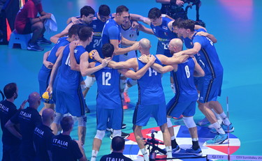

Gli sport di squadra rappresentano una categoria appassionante e diversificata all'interno del vasto mondo dello sport. In questi contesti competitivi, due o più squadre si affrontano seguendo regole ben definite, con l'obiettivo di ottenere la vittoria attraverso una combinazione di abilità individuali e strategie di squadra.
Tra gli sport di squadra più popolari spiccano il calcio, il basket, la pallavolo, il rugby e l'hockey.
Ogni disciplina ha le proprie peculiarità, ma condividono il concetto centrale di cooperazione. La cooperazione è un elemento fondamentale, poiché i giocatori devono lavorare insieme per superare l'avversario e raggiungere gli obiettivi prefissati.
In uno sport di squadra, la dinamica di gioco è caratterizzata da una costante interazione tra i membri della squadra. La comunicazione è essenziale per coordinare azioni e risposte istantanee durante le fasi di gioco. Ciò crea un ambiente di gioco dinamico, in cui le decisioni rapide e le strategie condivise sono determinanti per il successo complessivo.
L'aspetto sociale degli sport di squadra è altrettanto rilevante. Gli atleti sviluppano legami stretti con i compagni di squadra attraverso l'allenamento, le vittorie e le sconfitte. Questi legami contribuiscono a una forte coesione di gruppo, fondamentale per affrontare le sfide sul campo.
La tattica è un altro elemento chiave. Gli allenatori devono sviluppare strategie che sfruttino al meglio le abilità di ciascun giocatore, creando un equilibrio armonioso tra attacco e difesa. La sinergia risultante può spesso superare il talento individuale.

In conclusione, gli sport di squadra vanno oltre la competizione fisica e rappresentano un intricato intreccio di abilità individuali, cooperazione, strategia e legami umani. La loro popolarità globale testimonia il fascino intrinseco di queste discipline, che celebrano l'essenza della collaborazione e della competizione sportiva.